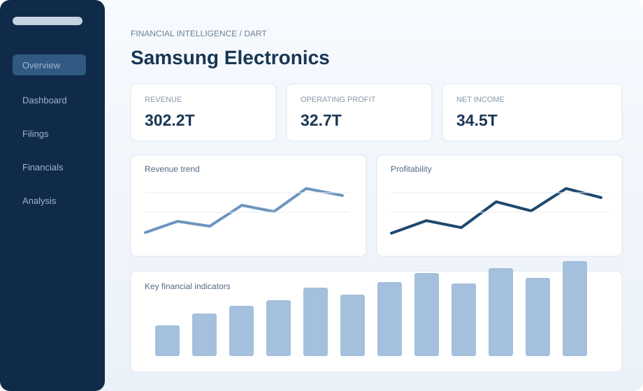

PERSONAL PORTFOLIO · 2026
Hi, I'm
Byeon Yewon
Aspiring Marketer
새로운 것을 배우고,
꾸준히 성장하는 사람이 되고 싶습니다.
BETTER VERSION
of Me
of Me
01 / 05
LEARN · CREATE · GROW
확인해보세요. 02AI-Generated
Reports↗데이터를 활용한 프로젝트와
분석 기록을 확인해보세요. 03Qualifications &
Certifications↗교육 및 자격 관련
기록을 확인해보세요. 04Research &
Activities↗배움과 경험을 통해
성장한 기록을 소개합니다.
01 / ABOUT
About Me
작은 경험을 쌓아 더 나은 방향으로 나아갑니다.
HELLO, NICE TO MEET YOU
변예원 Byeon Yewon
밝고 긍정적인 성격으로 사람들과 원활하게 소통하며, 맡은 일에 책임감을 가지고 끝까지 해내려고 노력합니다. 새로운 것을 배우는 데 적극적이며, 부족한 부분은 꾸준히 노력해 발전하는 모습을 보여드리겠습니다.
BIRTH
2007.01.18
EDUCATION
2026 — 2029한림성심대학교 물리치료과 재학
WORK STYLE
VALUES
02 / SELECTED PROJECT
AI-Generated Reports
데이터를 수집하고 분석해 의미 있는 인사이트로 연결한 프로젝트입니다.
FEATURED PROJECT / 01
Samsung Electronics
Samsung Electronics
Financial Analysis
DART API를 활용해 삼성전자 공시 데이터를 수집하고, 주요 재무지표와 재무비율을 분석하는 대시보드를 구현했습니다.
View GitHub Project
03 / LEARNING RECORD
Global MOOC on the Ethics of AIUNESCO · LG AI Research / Coursera
2026.09.13
↗
Qualifications & Certifications
배움을 이어가며 새롭게 익힌 내용을 기록합니다.
05 / RESEARCH & ACTIVITIES
Research & Activities
새로운 배움과 경험을 통해 성장해 온 기록을 소개합니다.
CERTIFICATE RECORDView Certificate Verification ↓